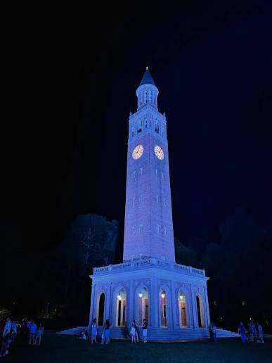
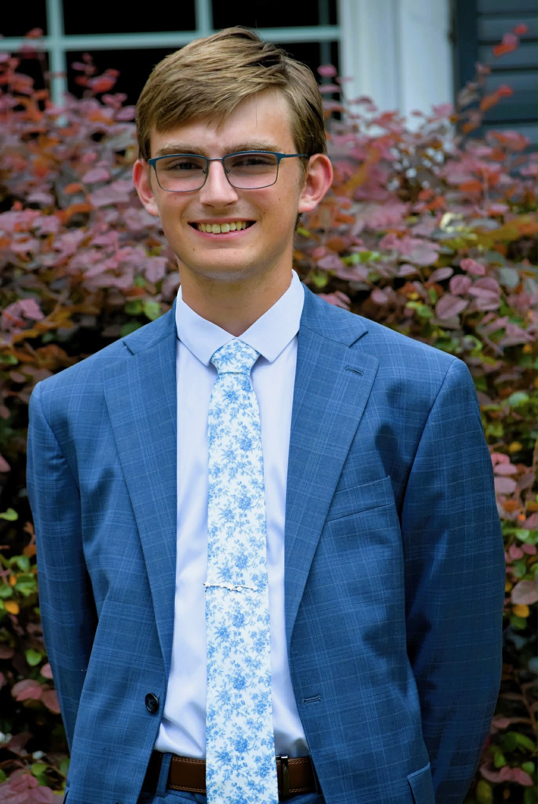

School Email: rcarsonw@unc.edu
Personal Email: robcarweaver@gmail.com
LinkedIn: www.linkedin.com/in/robertcarsonweaver
Phone: (704) 678-7394

Four years ago, after my eight-year-old younger sister felt sudden fatigue and immense thirst for 2 weeks, she was diagnosed with type one diabetes. The hospital admitted her that night with a blood sugar of 812, as she was in Diabetic ketoacidosis. When she returned home, I tried my best to be there for her; despite not knowing much about the disease, I felt a sense of responsibility as her 14-year-old brother. Annalyn needed to prick her finger in order to confirm the exactness of her CGM, but was afraid to do so I offered to prick my finger first to show her it did not hurt. I put my blood into the lancet device, where I discovered my glucose to be 500, rather than the normal 100-120 range. Though discovering I also had Type 1 Diabetes was influential on my health, I will never forget the happiness and pride I took in showing my little sister the finger prick would not hurt. I enjoyed making her feel safe during uncertainty. I knew then I wanted to become a doctor to make patients feel ensured in uncertainties the way I did Annalyn. As an ear nose and throat doctor, I could calm patients experiencing infections and guide them through any possible surgeries in order to make them feel as safe as possible through my assurances.
In high school, I participated in theatre as lead roles, supporting roles, and a backstage hand. No matter the role, the theatre community emphasized the value of teamwork. I learnt quickly that, for a show to go well, each stagehand and actor needs to know exactly what their next move is, and should even help facilitate other jobs by seeing who needs help. Even as an actor, I would help the stage director pull in and out fly rails, and would help other actors change during quick turnarounds. There was one other important lesson my eyes were opened to: empathy. When I performed as Laurie in “Little Women,” I saw in my own character how no person is one-sided through my research and exploration of the young man. Though Laurie was not the most likeable character, after I worked as his character I noticed his constant loyalty and growth towards the end of the play, mirroring how most people have empathy deep down that will not be available at first glance. Through Laurie and my experiences on the stage, I cemented my understanding of the importance of teamwork and reliable stagehands and further expanded my personal leniency with new faces as I remembered that no one can be read at first glance. Leniency and empathy are values I will hold close as I try to recreate the same sense of safety I gave my sister when I pursue the medical field.
At UNC, I am a member of Geoguessr club, the Cubing Club, Christians in Healthcare, and am a part of the Newman Church. With the Christians in Healthcare club, I have had opportunities to volunteer at Peds Playroom. I also presented in Sciathon-U, where my group suggested a solution to lithium mining by replacing lithium batteries with sodium batteries through the sodium gathered in salt water in order to additionally create clean drinking water. I plan to continue expanding my involvement at Carolina as I continue my Freshman Year.

Running
Speedcubing
Theatre
Playing the guitar
Collecting records